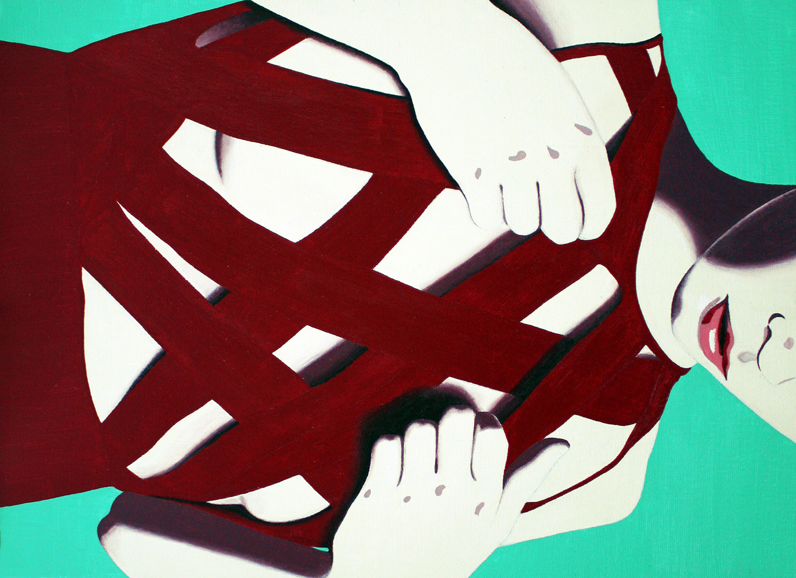
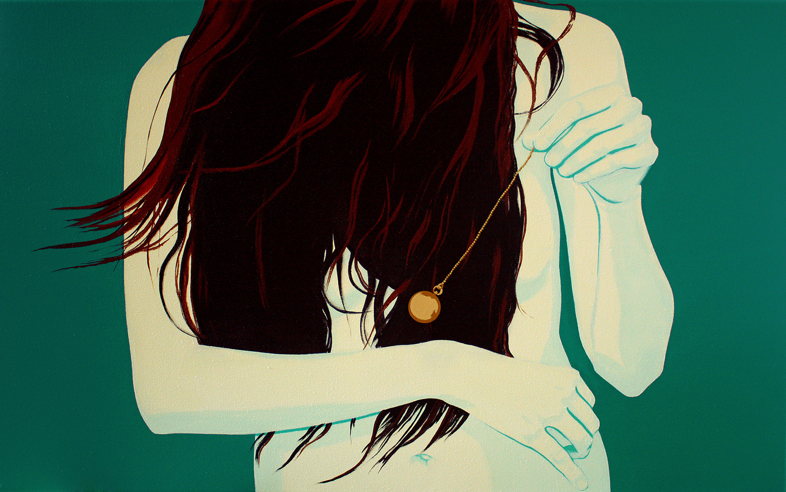
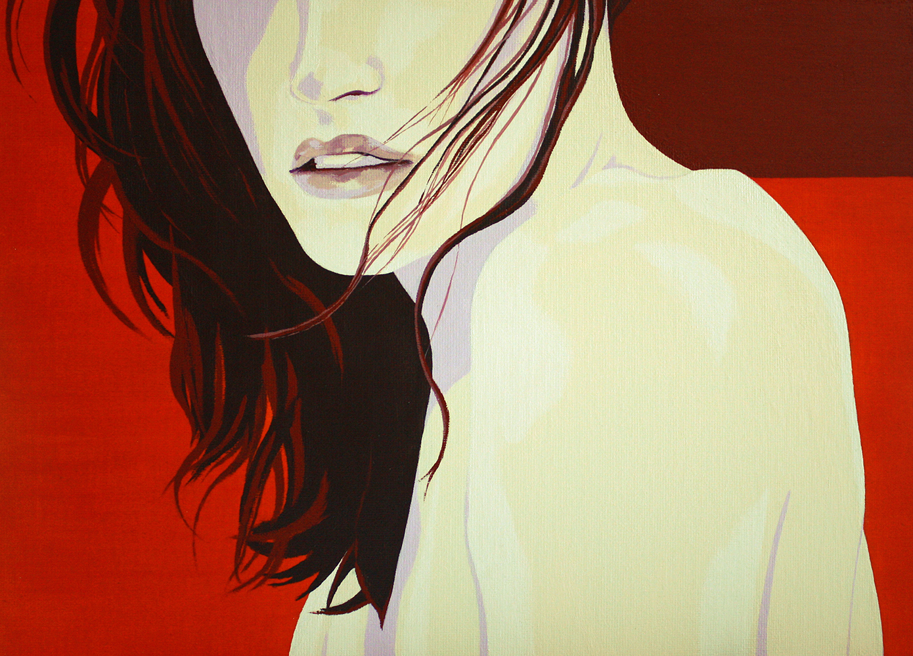
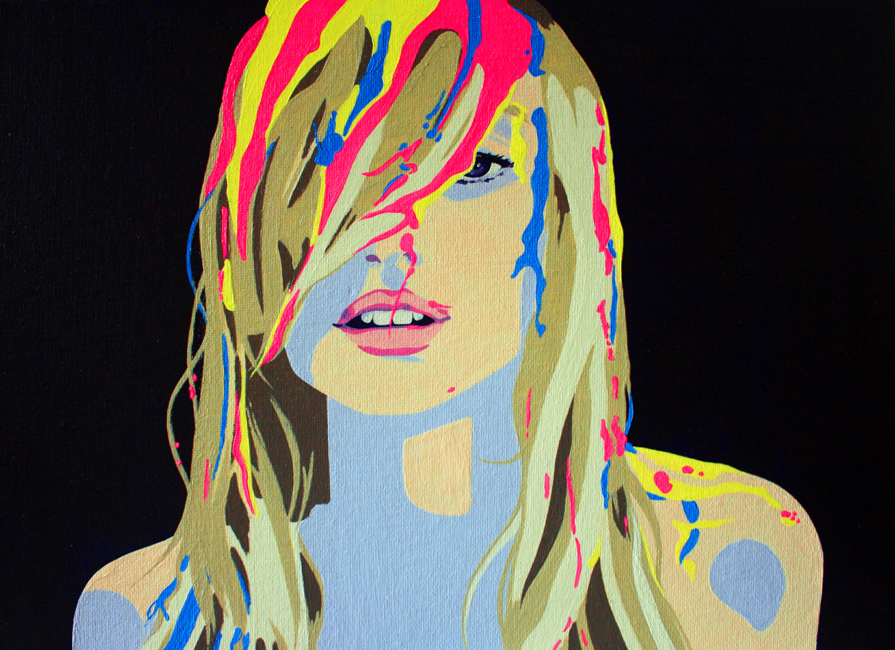
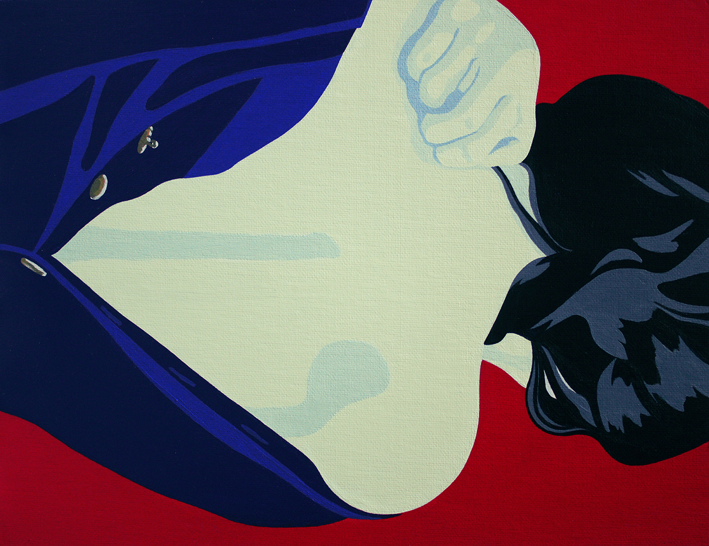
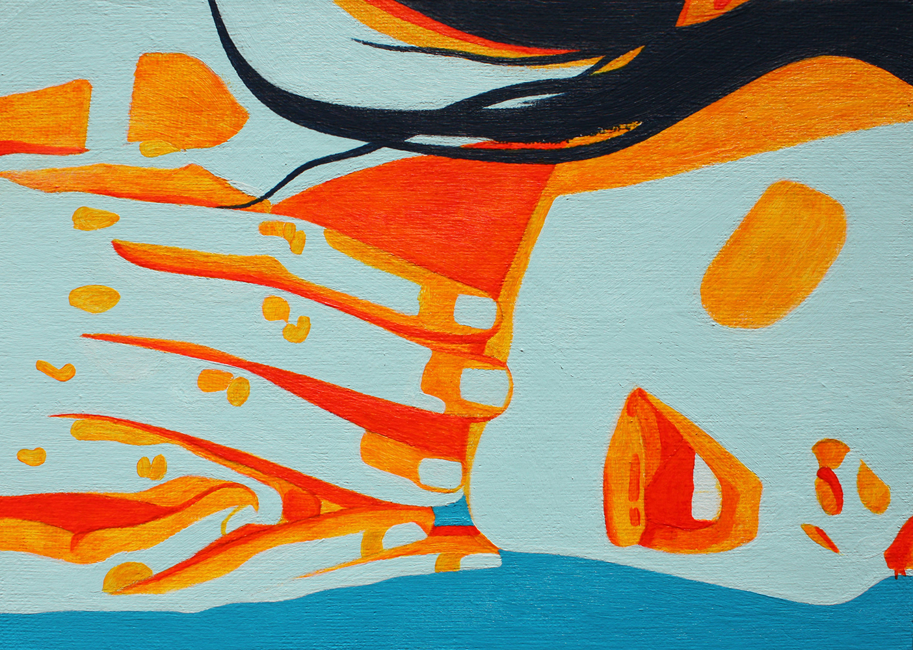

Mujer Chamán, 2016 La Dolorosa, 2016 La espera, 2014 
Elixir, 2016 La tentación, 2016 
Hipnosis, 2015 
Canícula, 2015 La huida, 2015 La trampa, 2016 The Blind, 2016 
Salvaje, 2016 
Rubor, 2016 
Plaisir, 2016 Travesuras, 2016
Acrílico sobre lienzo, 70 x 70 cm

Acrílico sobre lienzo, 195 x 195 cm
Acrílico sobre tablilla entelada, 22 x 27 cm
Acrílico sobre tablilla entelada, 33 x 24 cm
Acrílico sobre tablilla entelada, 24 x 19 cm
Acrílico sobre lienzo, 38 x 61 cm
Acrílico sobre tablilla entelada, 24 x 33 cm
Acrílico sobre tablilla entelada, 24 x 33 cm
Acrílico sobre lienzo, 38 x 61 cm
Acrílico sobre lienzo, 89 x 146 cm
Acrílico sobre tablilla entelada, 24 x 33 cm
Acrílico sobre tablilla entelada, 33 x 24 cm
Acrílico sobre tablilla entelada, 22 x 16 cm
Acrílico sobre tablilla entelada, 22 x 16 cm